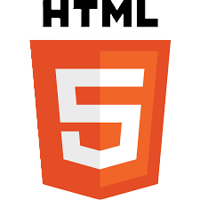

Evoluindo a já clássica e conhecida "Web de documentos", o W3C ajuda no desenvolvimento de tecnologias que darão suporte á "Web de documentos", viabilizando pesquisas como num banco de dados.
O objetivo final da "Web de documentos" é possibilitar com que computadores façam coisas mais úteis e com que o desenvolvimento de sistemas possa oferecer suporte a interações na rede. O termo "Web de documentos" refere-se á visão do W3C da Web dos Dados Conectados.
A Web Semântica dá ás pessoas a capacidade de criarem repositórios de dados na Web, construírem vocabulários e escreverem regras para interoperarem com esses dados